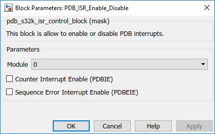

PDB ISR Enable Disable Block
The main functionality of the block is to allow the user to Enable/Disable PDB ISRs.
Block Image

Inputs:
- None
Outputs:
- None
Parameters and Dialog Box
PDB Module
Selects which PDB module to use.
Counter Interrupt Enable (PDBIE)
Enables the PDB interrupt. When PDBIE is set and DMAEN is cleared, PDBIF generates a PDB interrupt.
Sequence Error Interrupt Enable (PDBEIE)
Enables the PDB sequence error interrupt. When PDBEIE is set, any of the PDB channel sequence error flags generates a PDB sequence error interrupt.
Block Dependency
- Use PDB_Config Block to configure PDB
Block Miscellaneous Details:
- None